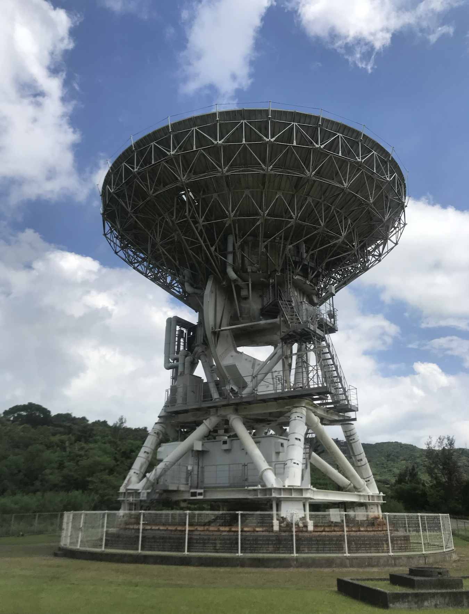

Profile

- 名前：フィゲロア ビクトル龍馬 (VictorRyoma Figueroa)
- 生年月日:：2006年10月2日
- 出身：Baltimore、Maryland
- 在住：広島県広島市
- 所属：N高校研究部[広域科学グループ]、UnFiction企画部、
学生団体Larva06記事部
- 研究内容1：星の学校2022 [2001CC21の光度曲線の解析]
- 研究内容2：美ら星研究体験隊 [メーザーの新規天体の探索]
- 研究内容3：もし天2023 [木星の物質濃集の解析]
- 実績
第18回エコノミクス甲子園全国大会出場。英語ラウンドのビジネスケースにて1位。
- 国際経済学オリンピック日本代表最終候補(3/1現在)
- 第二回天文学オリンピック本戦出場
- G7広島サミットジュニア会議参加。総理官邸へ成果文書を渡すため表敬訪問も行った。
- 活動
広島市の原爆ドームで外国人観光客を英語でガイドするYouthPeaceVolunteerにて活動している。
- 呉市かまがり天体観測館にて天文ボランティアとして活動している。
- 能登地震学生支援募金プロジェクト 中四国支部長として活動を行っている。
- 広島のラジオ放送にて出演を3度ある。